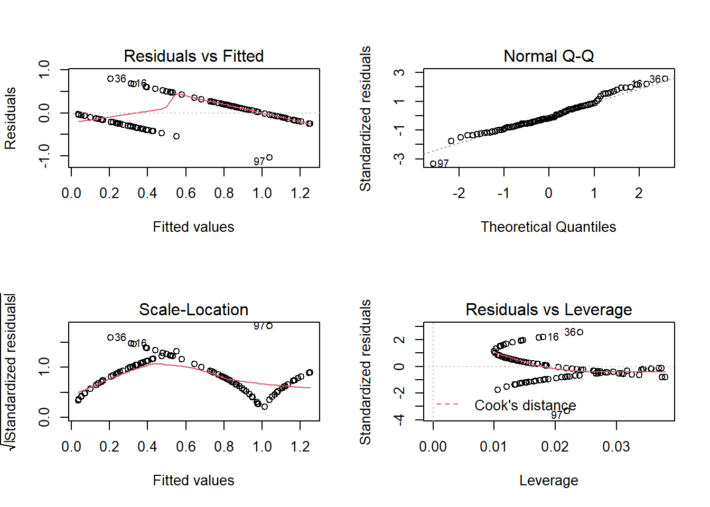
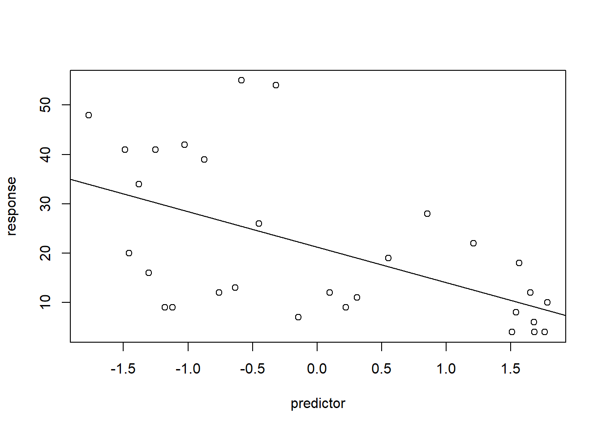
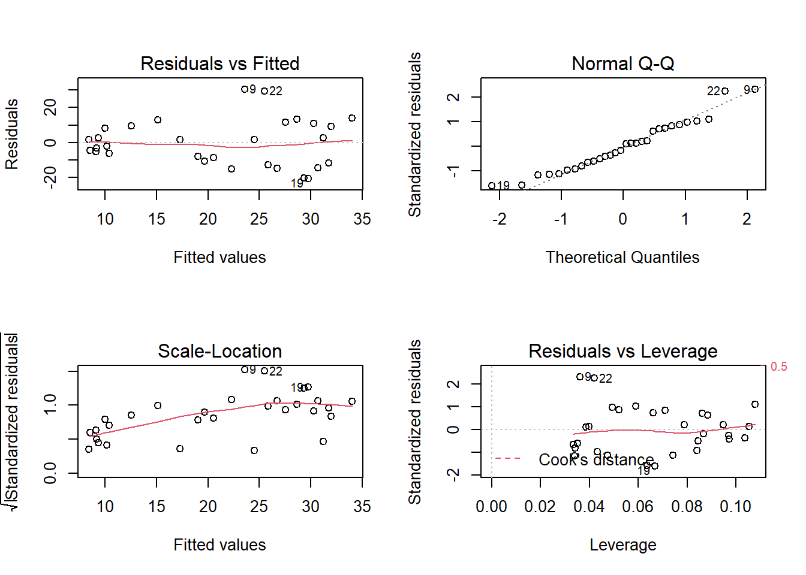
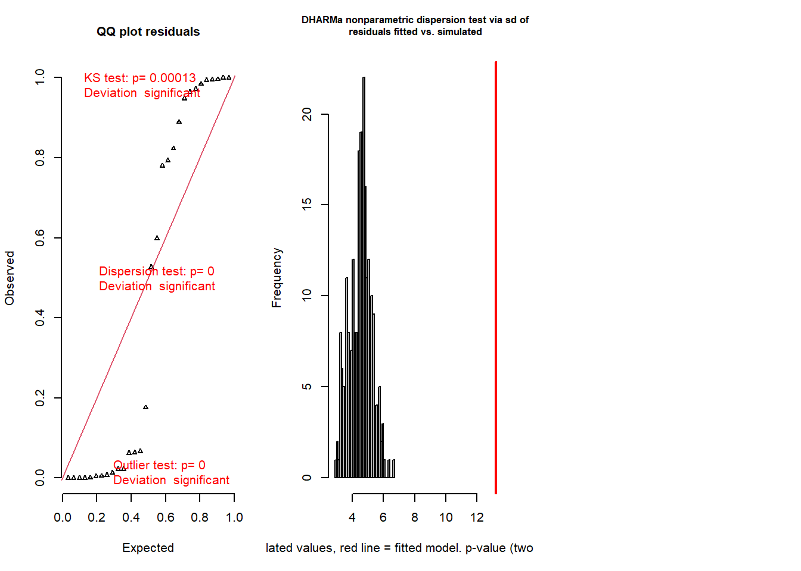
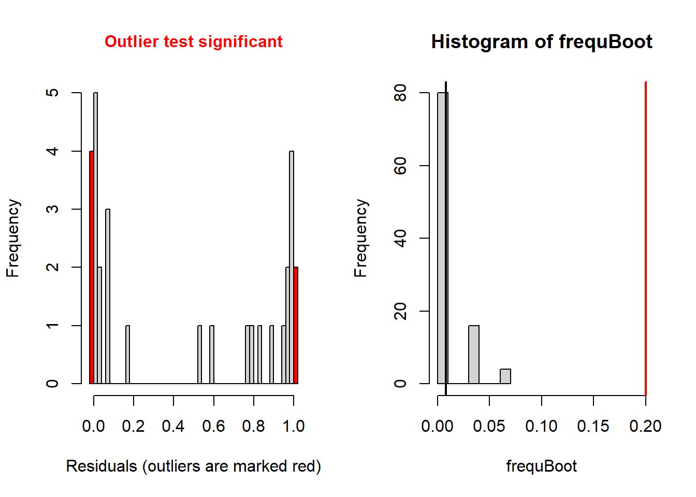
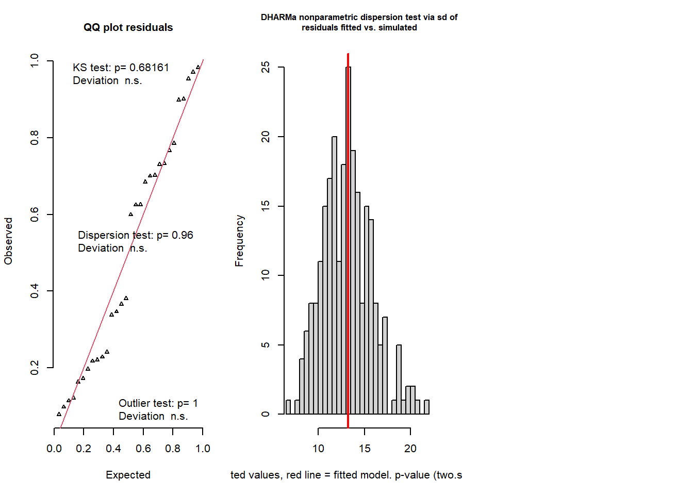
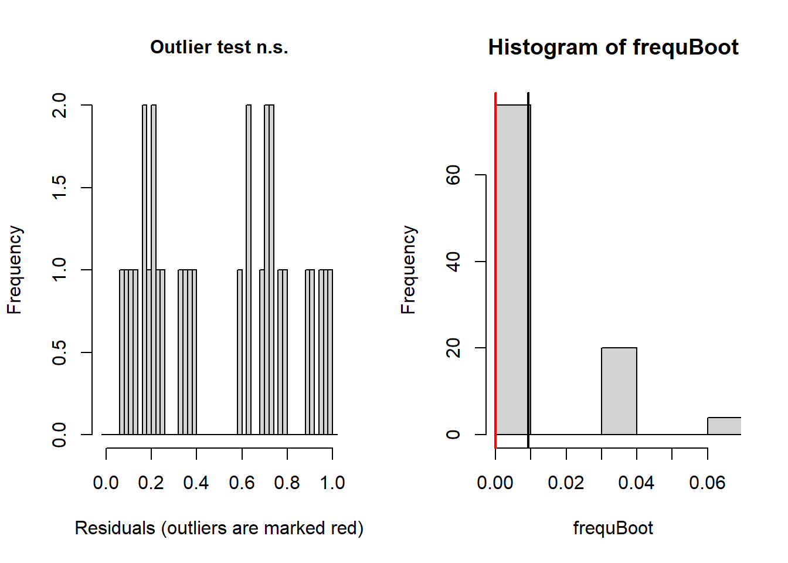

Generalized Linear Mixed Models (GLMM)
NRES 710
Fall 2020
Download the R code for this lecture!
To follow along with the R-based lessons and demos, right (or command) click on this link and save the script to your working directory
Overview: Generalized Linear Models
Generalized Linear Models (GLM) are not generally covered in intro stats classes, but they are so flexible and so common in ecology and environmental science that you really need to at least know that these models exist!
The real data sets that we deal with as ecologists and environmental scientists tend to violate some key assumptions of classical linear regression and ANOVA. In particular, residuals are often decidedly non-normal and variance is decidedly non-equal (heteroskedastic) across the range of predictions.
Generalized linear models allow us to model response variables that are not amenable to classical linear regression – but allows us to use a model structure that closely resembles linear regression. Pretty much everything about running a GLM is akin to linear regression. The primary function for running GLM models (‘glm’) even looks very similar to the regression function ‘lm’.
GLMs are parametric analyses – it’s just that (1) we don’t need to assume our response variable is normally distributed and (2) we don’t need to assume the relationship between the response variable and the predictor variable(s) is linear on the scale of the untransformed response variable. Let’s look into each of these in more detail:
Alternative distributions
So we don’t need to assume the response variable is normally distributed – but we do need to assume it is distributed according to some known probability distribution – and we need to specify what distribution we ARE assuming. We can assume that the response process is Poisson distributed, or gamma distributed, or beta distributed, or any of a host of other distributions. But again, we have to specify which distribution!
Link functions
So we don’t need to assume the relationship between the mean of the response variable and the predictor variable(s) is linear on the scale of the untransformed response variable – but the hypothesized relationship must be linear on some transformation of the response variable – and we need to specify what transformed version of the response process we wish to assume linearity for. This is called the ‘link function’.
A simple example (logistic regression)
For example, we might have a binary response variable and a continuous predictor variable. Making the assumption of linearity would not necessarily make sense in this case.
Let’s first make up an example:
## made up data for glm #1 (logistic regression)
predictor <- runif(100,0,50)
response <- rbinom(100,1, plogis(-5 + 0.26*predictor) )
plot(response~predictor,ylim=c(-2,2))
abline(lm(response~predictor),col="red") # overlay regression line
layout(matrix(1:4,nrow=2,byrow=2))
plot(lm(response~predictor)) Note that the predicted mean response at high values of the predictor exceed 1- which is impossible for a binary response. Clearly we can’t make the assumption of linearity on the untransformed binary response. Furthermore, the other diagnostic plots also do not look great…
One transformation that makes sense for a regression with a binary response is the logit transformation. The logit transformation is commonly used to take probabilities (which are constrained between 0 and 1) and transform them to values that can vary between -Inf and Inf.
For example, take the following probabilities:
probs <- runif(10)
probs## [1] 0.2932703 0.2762224 0.2110966 0.8579968 0.4781018 0.5652622 0.3387000
## [8] 0.3628480 0.8153420 0.7444351Here’s what happens if we apply the logit transformation:
\(logit(p) = log(\frac{p}{(1-p)})\)
data.frame(
p = probs,
logit.p=log(probs/(1-probs))
)## p logit.p
## 1 0.2932703 -0.87955345
## 2 0.2762224 -0.96327777
## 3 0.2110966 -1.31832775
## 4 0.8579968 1.79875055
## 5 0.4781018 -0.08764869
## 6 0.5652622 0.26254673
## 7 0.3387000 -0.66909266
## 8 0.3628480 -0.56302438
## 9 0.8153420 1.48510217
## 10 0.7444351 1.06914925If our response variable is binary and we want to assume that the mean response (on some transformed scale) is linearly dependent on our predictor variable, the logit transformation is a good candidate for our link function, because this way the mean response will never go below zero or above one.
So instead of:
\(\bar{y} = \beta_0 + \beta_1\cdot x\)
We can use the logit link and assume instead that:
\(logit(\bar{y}) = \beta_0 + \beta_1\cdot x\)
If we solve for y, this equation becomes:
\(\bar{y} = \frac{e^{\beta_0 + \beta_1\cdot x}}{1+e^{\beta_0 + \beta_1\cdot x}}\)
This is essentially what we do when we conduct a logistic regression! Specifically, in a logistic regression we assume the following:
Response distribution: binomial with size=1 (can only be zero or 1; also known as a Bernoulli distribution)
Link function: logit.
We use a binomial response distribution because our response variable is discrete, just like a binomial distribution. If you flip one coin you can get only a zero or a one, just like the response variable. The binomial distribution matches the response variable, so it is an appropriate distribution to assume!
## conduct logistic regression:
model <- glm(response~predictor,family=binomial(link="logit")) # logistic regression in R
summary(model) # summary looks similar to ordinary linear regression!##
## Call:
## glm(formula = response ~ predictor, family = binomial(link = "logit"))
##
## Deviance Residuals:
## Min 1Q Median 3Q Max
## -3.3119 -0.3701 0.0710 0.2598 2.1498
##
## Coefficients:
## Estimate Std. Error z value Pr(>|z|)
## (Intercept) -4.35746 0.93991 -4.636 3.55e-06 ***
## predictor 0.23741 0.04976 4.771 1.83e-06 ***
## ---
## Signif. codes: 0 '***' 0.001 '**' 0.01 '*' 0.05 '.' 0.1 ' ' 1
##
## (Dispersion parameter for binomial family taken to be 1)
##
## Null deviance: 130.684 on 99 degrees of freedom
## Residual deviance: 53.208 on 98 degrees of freedom
## AIC: 57.208
##
## Number of Fisher Scoring iterations: 7newdat <- data.frame( # make predictions for plotting regression line and approx conf bounds
predictor = seq(0,50,1)
)
mypred <- predict(model,type="response",se.fit=T,newdata = newdat)
plot(response~predictor)
lines(newdat$predictor,mypred$fit,col="blue")
lines(newdat$predictor,mypred$fit+2*mypred$se.fit,col="blue",lty=2)
lines(newdat$predictor,mypred$fit-2*mypred$se.fit,col="blue",lty=2)
Note that the relationship between the reponse and predictor looks non-linear. But this is not the same thing as non-linear regression. GLM is a type of linear model for a reason. It’s just that the relationship is assumed to be linear on the logit scale. Here is another visualization of the same exact model:
par(mfcol=c(1,2))
mypred <- predict(model,type="link",se.fit=T,newdata = newdat)
plot(newdat$predictor,mypred$fit,col="blue",type="l",ylab="mean response(logit scale)",xlab="predictor")
lines(newdat$predictor,mypred$fit+2*mypred$se.fit,col="blue",lty=2)
lines(newdat$predictor,mypred$fit-2*mypred$se.fit,col="blue",lty=2)
mypred <- predict(model,type="response",se.fit=T,newdata = newdat)
plot(newdat$predictor,mypred$fit,col="blue",type="l",ylab="mean response",xlab="predictor")
lines(newdat$predictor,mypred$fit+2*mypred$se.fit,col="blue",lty=2)
lines(newdat$predictor,mypred$fit-2*mypred$se.fit,col="blue",lty=2)
Another simple example (Poisson count regression)
Sometimes our measured response is a count of something (e.g., number of stems in a plot). In such cases, our response variable cannot go below zero- and the response variable should ideally come from a discrete distribution that only allows integers. The simplest way to model this is:
Response distribution: Poisson
Link function: Natural logarithm
The Poisson distribution (with only one parameter) is the simplest discrete probability distribution, and the (natural) log is the simplest link function that maps a quantity with a lower bound of zero to a quantity with a lower bound of -Inf.
Let’s make up some count data:
# Count regression example
predictor = runif(30,-2,2)
response = rnbinom(30,mu=exp(3-0.5*predictor),size=2)
plot(response~predictor)
abline(lm(response~predictor))
par(mfrow=c(2,2))
plot(lm(response~predictor))
Here we see some potential issues with ordinary linear regression and we might consider Poisson count regression instead!
## try Poisson count regression model!
model <- glm(response~predictor,family=poisson(link="log"))
summary(model)##
## Call:
## glm(formula = response ~ predictor, family = poisson(link = "log"))
##
## Deviance Residuals:
## Min 1Q Median 3Q Max
## -4.5186 -2.3991 -0.4442 1.7086 5.7962
##
## Coefficients:
## Estimate Std. Error z value Pr(>|z|)
## (Intercept) 2.96237 0.04340 68.25 <2e-16 ***
## predictor -0.37438 0.03729 -10.04 <2e-16 ***
## ---
## Signif. codes: 0 '***' 0.001 '**' 0.01 '*' 0.05 '.' 0.1 ' ' 1
##
## (Dispersion parameter for poisson family taken to be 1)
##
## Null deviance: 326.28 on 29 degrees of freedom
## Residual deviance: 214.70 on 28 degrees of freedom
## AIC: 357.06
##
## Number of Fisher Scoring iterations: 5plot(response~predictor)
newdat <- data.frame(
predictor = seq(-3,3,0.1)
)
mypred <- predict(model,type="response",se.fit = T,newdata=newdat)
lines(newdat$predictor,mypred$fit,col="blue")
lines(newdat$predictor,mypred$fit+2*mypred$se.fit,col="blue",lty=2)
lines(newdat$predictor,mypred$fit-2*mypred$se.fit,col="blue",lty=2)
Diagnostic testing with GLM
Obviously, the standard diagnostic plots don’t make much sense for GLM– after all, they are testing assumptions that we are no longer making! We don’t need to test for normality of residuals if we are assuming our response variable is binomially distributed! We don’t need to test for homogeneity of variance if our assumed probability distribution is heteroskedastic!
The Poisson distribution, for example, does not have homogeneous variance- in fact, the variance of the Poisson distribution is equal to the mean. So the larger the expected value, the larger the variance!
However, we need some way of testing whether the distribution we selected is a reasonable fit to our data. We could use so-called deviance residuals here (which is the default in r) but I prefer to use the DHARMa package in R.
residuals(model) # compute the deviance residuals for the poisson regression model## 1 2 3 4 5 6
## -2.42978608 -2.50052900 -1.65007105 -3.05661566 2.48675116 2.00642043
## 7 8 9 10 11 12
## -2.24376499 1.20446543 5.79618066 -3.44455501 0.63339176 0.02407597
## 13 14 15 16 17 18
## -1.45936015 1.73130667 1.64065607 -2.55764308 2.19660667 0.79822060
## 19 20 21 22 23 24
## -4.51857418 -4.41659884 -2.30685647 5.38416382 -3.01904933 2.37912388
## 25 26 27 28 29 30
## 0.47458305 3.27017286 -1.61064806 0.27575427 -0.91243271 -2.16081383summary(residuals(model)) # median should be near zero## Min. 1st Qu. Median Mean 3rd Qu. Max.
## -4.5186 -2.3991 -0.4442 -0.2662 1.7086 5.7962paste0(c("Null deviance: ", "Residual deviance: "), # null deviance should be much higher than residual deviance
round(c(model$null.deviance, deviance(model)), 2))## [1] "Null deviance: 326.28" "Residual deviance: 214.7"paste0(c("model df: ", "Residual deviance: "), # resid deviance should be close to residual df
round(c(model$df.residual, deviance(model)), 2))## [1] "model df: 28" "Residual deviance: 214.7"So using the deviance residuals we’re starting to get a picture that the Poisson distribution may not be a great fit. Let’s use the DHARMa package now…
library(DHARMa)## This is DHARMa 0.3.3.0. For overview type '?DHARMa'. For recent changes, type news(package = 'DHARMa') Note: Syntax of plotResiduals has changed in 0.3.0, see ?plotResiduals for detailssimresids <- simulateResiduals(model,n=250,plot=T) # clearly this is a bad fit!
plotResiduals(simresids,predictor) # look for patterns across a predictor variable
testResiduals(simresids) # run tests on the residuals!
## $uniformity
##
## One-sample Kolmogorov-Smirnov test
##
## data: simulationOutput$scaledResiduals
## D = 0.40017, p-value = 0.0001343
## alternative hypothesis: two-sided
##
##
## $dispersion
##
## DHARMa nonparametric dispersion test via sd of residuals fitted vs.
## simulated
##
## data: simulationOutput
## ratioObsSim = 2.9138, p-value < 2.2e-16
## alternative hypothesis: two.sided
##
##
## $outliers
##
## DHARMa bootstrapped outlier test
##
## data: simulationOutput
## outliers at both margin(s) = 6, observations = 30, p-value < 2.2e-16
## alternative hypothesis: two.sided
## percent confidence interval:
## 0.00000000 0.06666667
## sample estimates:
## outlier frequency (expected: 0.008 )
## 0.2## $uniformity
##
## One-sample Kolmogorov-Smirnov test
##
## data: simulationOutput$scaledResiduals
## D = 0.40017, p-value = 0.0001343
## alternative hypothesis: two-sided
##
##
## $dispersion
##
## DHARMa nonparametric dispersion test via sd of residuals fitted vs.
## simulated
##
## data: simulationOutput
## ratioObsSim = 2.9138, p-value < 2.2e-16
## alternative hypothesis: two.sided
##
##
## $outliers
##
## DHARMa bootstrapped outlier test
##
## data: simulationOutput
## outliers at both margin(s) = 6, observations = 30, p-value < 2.2e-16
## alternative hypothesis: two.sided
## percent confidence interval:
## 0.00000000 0.06666667
## sample estimates:
## outlier frequency (expected: 0.008 )
## 0.2Okay so the DHARMa package diagnostics seem to indicate that the Poisson regression was a poor fit to the data (you will find this is usually true with Poisson regression). Let’s try running a negative binomial regression instead!
## try NegBinom count regression model!
library(MASS)
## NOTE: in reality you should use glm.nb because you don't know the additional parameter theta!
model <- glm(response~predictor,family=negative.binomial(link="log",theta = 2))
summary(model)##
## Call:
## glm(formula = response ~ predictor, family = negative.binomial(link = "log",
## theta = 2))
##
## Deviance Residuals:
## Min 1Q Median 3Q Max
## -1.3720 -0.8412 -0.1491 0.3567 1.4563
##
## Coefficients:
## Estimate Std. Error t value Pr(>|t|)
## (Intercept) 2.95740 0.11424 25.887 < 2e-16 ***
## predictor -0.39653 0.09609 -4.127 0.000299 ***
## ---
## Signif. codes: 0 '***' 0.001 '**' 0.01 '*' 0.05 '.' 0.1 ' ' 1
##
## (Dispersion parameter for Negative Binomial(2) family taken to be 0.7018831)
##
## Null deviance: 30.812 on 29 degrees of freedom
## Residual deviance: 19.895 on 28 degrees of freedom
## AIC: 230.94
##
## Number of Fisher Scoring iterations: 5model <- glm.nb(response~predictor)
plot(response~predictor)
newdat <- data.frame(
predictor = seq(-3,3,0.1)
)
mypred <- predict(model,type="response",se.fit = T,newdata=newdat)
lines(newdat$predictor,mypred$fit,col="blue")
lines(newdat$predictor,mypred$fit+2*mypred$se.fit,col="blue",lty=2)
lines(newdat$predictor,mypred$fit-2*mypred$se.fit,col="blue",lty=2)
Now let’s check the model fit!
simresids <- simulateResiduals(model,n=250,plot=T) # looks a lot better!
testResiduals(simresids) # run tests on the residuals!
## $uniformity
##
## One-sample Kolmogorov-Smirnov test
##
## data: simulationOutput$scaledResiduals
## D = 0.12595, p-value = 0.6816
## alternative hypothesis: two-sided
##
##
## $dispersion
##
## DHARMa nonparametric dispersion test via sd of residuals fitted vs.
## simulated
##
## data: simulationOutput
## ratioObsSim = 1.0025, p-value = 0.96
## alternative hypothesis: two.sided
##
##
## $outliers
##
## DHARMa bootstrapped outlier test
##
## data: simulationOutput
## outliers at both margin(s) = 0, observations = 30, p-value = 1
## alternative hypothesis: two.sided
## percent confidence interval:
## 0.00000000 0.06666667
## sample estimates:
## outlier frequency (expected: 0.00933333333333333 )
## 0## $uniformity
##
## One-sample Kolmogorov-Smirnov test
##
## data: simulationOutput$scaledResiduals
## D = 0.12595, p-value = 0.6816
## alternative hypothesis: two-sided
##
##
## $dispersion
##
## DHARMa nonparametric dispersion test via sd of residuals fitted vs.
## simulated
##
## data: simulationOutput
## ratioObsSim = 1.0025, p-value = 0.96
## alternative hypothesis: two.sided
##
##
## $outliers
##
## DHARMa bootstrapped outlier test
##
## data: simulationOutput
## outliers at both margin(s) = 0, observations = 30, p-value = 1
## alternative hypothesis: two.sided
## percent confidence interval:
## 0.00000000 0.06666667
## sample estimates:
## outlier frequency (expected: 0.00933333333333333 )
## 0Model selection with AIC
Often we have multiple candidate models for describing how our response variable relates to one or more of our predictor variables. This is true for multiple linear regression and GLM models, and mixed-effects models (see below) and non-linear regression models.
Information-theoretic criteria like Akaike’s Information Criterion provide a common currency that allows us to compare and rank multiple models.
In general, the models with the lowest AIC are better than models with higher AIC.
AIC is defined as:
\(AIC = -2\cdot ln(Likelihood + 2k\)
Where k is the number of fitted parameters in the model and Likelihood is the maximum likelihood of the data (probability of the observed data set under the fitted model).
There is a commonly used correction for small sample size called AICc.
Comparing multiple GLM models using AIC is relatively simple!
######
# Make up data!
predictor1 = runif(30,-2,2)
predictor2 <- runif(30,-100,100)
predictor3 <- rnorm(30) # useless predictor
response = rnbinom(30,mu=exp(3-0.5*predictor1+0.01*predictor2),size=2)
###
# fit a bunch of candidate models
model.pois.all <- glm(response~predictor1+predictor2+predictor3,family="poisson")
model.nb.all <- glm.nb(response~predictor1+predictor2+predictor3)
model.nb.1 <- glm.nb(response~predictor1)
model.nb.12 <- glm.nb(response~predictor1+predictor2)
model.nb.2 <- glm.nb(response~predictor2)
cand.set <- list(
Poisson=model.pois.all,
NegBin_allvars = model.nb.all,
NegBin_pred1 = model.nb.2,
NegBin_preds1and2 = model.nb.12,
NegBin_pred2 = model.nb.2
)
### Make AIC table
AICtab <- data.frame(
ModelName = names(cand.set),
LogLikelihood = sapply(cand.set,logLik),
AIC = sapply(cand.set,AIC)
)
AICtab$DeltaAIC <- abs(AICtab$AIC-min(AICtab$AIC))
AICtab[order(AICtab$DeltaAIC,decreasing = F),]## ModelName LogLikelihood AIC DeltaAIC
## NegBin_preds1and2 NegBin_preds1and2 -111.4196 230.8392 0.000000
## NegBin_allvars NegBin_allvars -111.2916 232.5831 1.743961
## NegBin_pred1 NegBin_pred1 -118.0889 242.1777 11.338580
## NegBin_pred2 NegBin_pred2 -118.0889 242.1777 11.338580
## Poisson Poisson -173.5860 355.1720 124.332889Overview: Mixed-effects models
Remember the assumption of independent observations? All of the analyses we have considered so far make that assumption. If that assumption is violated, we are committing pseudoreplication.
Mixed models allow us to build more realistic models that incorporate some known potential sources of non-independence in our data.